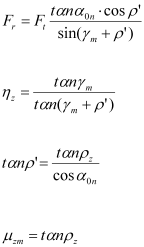

|
|
|


使用替代公式计算（与标准不同）
如果您选中此复选框，则在这些点使用替代计算方法：
- 齿顶处的有效齿厚（替代符合 DIN 3996:2019 的公式 (81) 或符合 ISO 14521:2010 的公式 (128)）
- 啮合功率损失 PVZ，系数为 1/9.550 而非 0.1
- 根据 Schlecht [10] 的径向力和啮合效率，其中 μzm 是轮齿的平均摩擦系数，ϱz 是平均摩擦系数的摩擦角

English Original
Calculating with alternative formulae (differs from standard)
Alternative calculation methods are used at these points if you select this checkbox:
- Effective tooth thickness at tip (instead of formula (81) in accordance with DIN 3996:2019 or formula (128) in accordance with ISO 14521:2010)
- Mesh power loss PVZ with coefficient 1/9.550 instead of 0.1
- Radial force and meshing efficiency according to Schlecht [10], where μzm is the tooth's mean coefficient of friction and ϱz is the angle of friction of the mean coefficient of friction